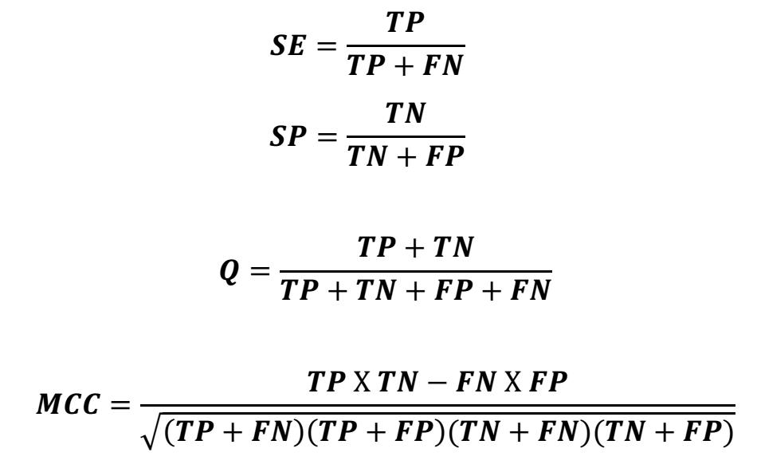

The SVMDLF is developed using 2440 DPP4 inhibitors, and 241464 putative negative compounds. Molecular descriptors and fingerprint were calculated using PaDEL software and a MOE software suite. Descriptor selection or the generation of predictive classification model is done on the basis of standard deviation and correlation analysis.
|
Descriptors
class
|
Number
of
descriptor
|
Descriptors
|
|
Padel
Descriptors 2D
|
19
|
ATSm3, ATSp3,
SC-3, SPC-4, SPC-5, VPC-4, VPC-5, SP-4, VP-2, VP-4, VP-5, nsssN,
maxHBa, MAXDP2, nHBDon_Lipinski, nRing, nHeteroRing, WTPT-3,
WTPT-5
|
|
MOE
Descriptors 2D & 3D
|
24
|
a_hyd, bpol,
b_single, chi1v, MNDO_E, opr_brigid, PEOE_PC+, PEOE_VSA_HYD,
PEOE_VSA_POS, pmi2, radius, SMR_VSA1, std_dim1, vsa_acc, vsa_hyd,
vsurf_D7, vsurf_D8, vsurfHB1, vsurfHB2, vsurf_HB4, vsurf_W1,
vsurf_W2, vsurf_Wp2, weinerPol
|
|
Fingerprints
|
166 bits
|
MACCS
|
Prediction and Cross-Validation: In this study, 90% of data, i.e., 2196 DPP4 actives and 217403 inactive compounds were used for training of the SVM classification model and remaining 10% (244 DPP4 active and 24156 inactive compounds) constituted the part of the test set for testing the model. This process of training and testing the model was done for all descriptor set and fingerprint. The selection of the final model was done on the basis of an external test set validation, which consist of 144 DPP4 inhibitors (not included in training or test set) and 40950 decoys from the Directory of Useful Decoys (DUD-E).
Performance Measures: Once a classification model was constructed, the performance was measured by various statistical parameters Sensitivity, Specificity, Accuracy, and MCC outlined below,
